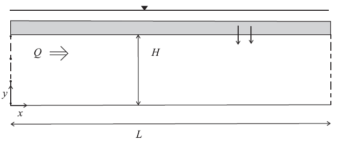
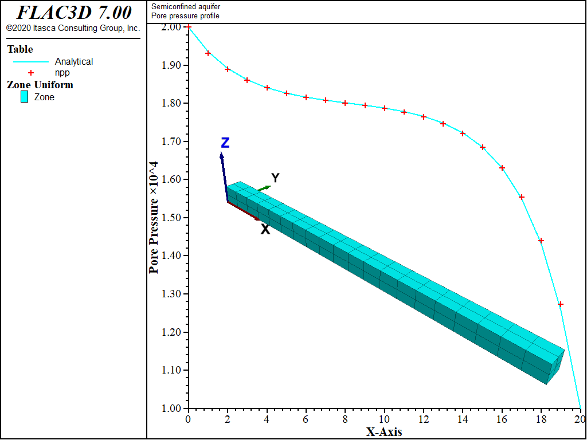

半承压含水层
注意
本示例的工程文件可在 FLAC3D 中查看/运行。[1] 该工程的主数据文件（main data files）在本示例末尾给出。
FLAC3D 可使用 施加单元面渗漏命令（zone face apply leakage） 命令模拟向浅层半承压含水层的流体渗漏。现以图 1（Figure 1） 草图所定义的示例进行演示。含水层长度为 \(L\)、高度为 \(H\)，并位于不透水基座之上。流体流动遵循达西定律；迁移系数 \(k\) 为均质且各向同性。半透水顶层具有渗透率 \(k_*\) 和厚度 \(H_*\)。本示例忽略重力的影响。渗漏层顶部的流体压力恒定，等于 \(p_*\)。侧向流体流动条件为：左边界恒定压力 \(p_0\)，右边界恒定压力 \(p_1\)。
目标是确定稳态孔隙压力分布和进入含水层的总渗漏量。浅层半承压含水层孔隙压力的一般解具有以下形式（见 Strack，1989）
其中 \(\lambda\) 为渗漏因子，具有长度量纲，其定义为 \(\lambda = \sqrt{k H H_*/k_*}\)；\(A\) 和 \(B\) 为由压力边界条件确定的常数。


图 1：浅层半承压含水层。
本问题的边界条件为
| \(p = p_0\) | 在 | \(x = 0\) |
| \(p = p_1\) | 在 | \(x = L\) |
孔隙压力解为
其中
含水层高度范围内的稳态流量由达西定律得到：
根据流动连续性，进入含水层的总渗漏量等于在 \(x\) = \(L\) 处流出的流量与在 \(x\) = 0 处流入的流量之差。利用方程(6)，经过若干推导可得
本问题的 FLAC3D 数据文件列于“SemiConfinedAquifer.dat”。解析解作为数据文件的一部分用 FISH 编写。FLAC3D 模型为 20 × 2 的网格，左边界（\(x\) = 0）施加恒定孔隙压力 \(p_0\) = 20 kPa，右边界（\(x\) = 20 m）施加恒定孔隙压力 \(p_1\) = 10 kPa。使用 施加单元面渗漏命令（zone face apply leakage） 命令沿模型顶部边界（\(y\) = 1 m）施加渗漏含水层边界条件。顶部孔隙压力为 \(p_*\) = 1.8 kPa，渗漏系数 \(h\)（见该方程（this equation））根据渗漏层的性质计算为 \(k_*/H_*\) = 2.98 × 10-9 m3/(N sec)。本问题的性质列于 设置命令（setup） 函数中。打开流体流动计算模式，关闭力学计算模式，并运行模拟直至达到稳态流动。
FISH 函数 检查（checkit） 将 FLAC3D 计算得到的渗漏量与稳态流动时 (7) 的解进行比较。打印（在 FISH 对话框消息中）的差值为 0.03%。沿模型底部从 \(x\) = 0 到 \(x\) = 20 记录的解析和数值孔隙压力分布曲线在图 2（Figure 2） 中进行比较。


图 2：孔隙压力分布。
参考文献
Strack, O. D. L. Groundwater Mechanics. New Jersey: Prentice Hall (1989).
数据文件
SemiConfinedAquifer.dat
; “半承压含水层”所用文件
model new
model large-strain off
model title 'Semiconfined aquifer'
fish automatic-create off
model configure fluid
; 几何
zone create brick point 0 (0,0,0) point 1 (20,0,0) point 2 (0,1,0) ...
point 3 (0,0,1) size 20 2 2
zone face skin
; 本构模型和参数
zone fluid cmodel assign isotropic
zone fluid property porosity=0.04 permeability=2e-8
zone gridpoint initialize fluid-tension -1e10
zone gridpoint initialize fluid-modulus 2e9
; --- 边界条件 ---
zone face apply leakage 1.8e4 3e-9 range group 'Top'
zone gridpoint fix pore-pressure 2e4 range group 'West'
zone gridpoint fix pore-pressure 1e4 range group 'East'
; --- 流体流动求解 ---
model fluid active on
model mechanical active off
model solve fluid time-total 1
model save 'confaquifer'
尾注
| [1] | 要在 FLAC3D 中查看该项目，请使用程序菜单。
⮡ FLAC |
⇐ Pressuremeter Test | Verification of Concepts, and Modeling Techniques for Specific Applications ⇒
| 这些内容对您有帮助吗？… | FLAC3D © 2019, Itasca | 原文更新于 2020 年 10 月 8 日 |